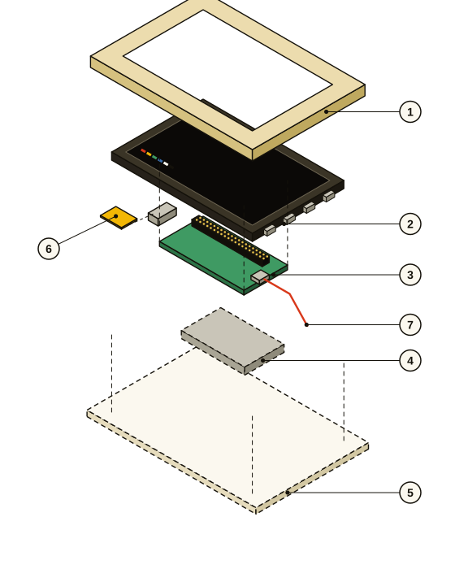

Raspberry Pi and e-paper

- Frame or mount. The window is cut to the panel; the frame setting draws the board inside whatever window your mount leaves.
- Pimoroni Inky Impression 7.3″. 800×480, six colours (Spectra 6), four buttons on the side.
- Raspberry Pi. A Pi 3 Model A+ or Pi Zero 2 WH. The 40-pin header pushes straight onto the back of the panel: no soldering, no wiring.
- Battery, optional. A PiSugar 3 clips on underneath and leaves the display connector free.
- Stand or wall mount.
- microSD card. A1-rated, 16–32 GB, with Ident on it.
- Power. The official 12.5 W micro-USB supply.